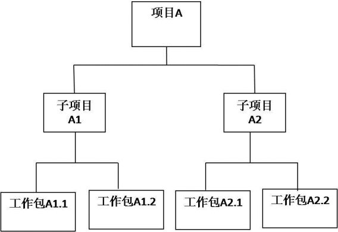
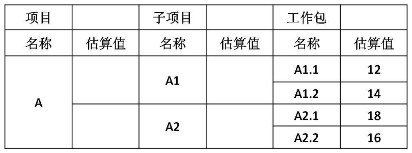

考试时间13:30——15:00 共90分钟。
- 本试卷共三道题，全部为必答题，每题25 分，满分75 分。
- 在答题纸的指定位置填写你所在的省、自治区、直辖市、计划单列市的名称。
- 在答题纸的指定位置填写准考证号、出生年月日和姓名。
- 答题纸上除填写上述内容外只能写解答。
- 解答时字迹务必清楚，字迹不清时，将不评分。
阅读下列说明，回答问题1 至问题3，将解答填入答题纸的对应栏内。
【说明】
一个信息系统集成项目有A、B、C、D、E、F 共6 个活动，目前是第12 周末，活动信息如下：
活动A：持续时间5 周，预算30 万元，没有前置活动，实际成本35.5 万元，已完成100%。
活动B：持续时间5 周，预算70 万元，前置活动为A，实际成本83 万元，已完成100%。
活动C：持续时间8 周，预算60 万元，前置活动为B，实际成本17.5 万元，已完成20%。
活动D：持续时间7 周，预算135 万元，前置活动为A，实际成本159 万元，已完成100%。
活动E：持续时间3 周，预算30 万元，前置活动为D，实际成本0 万元，已完成0%。
活动F：持续时间7 周，预算70 万元，前置活动为C 和E，实际成本0 万元，已完成0%。
项目在开始投入资金为220 万元，第10 周获得投入资金75 万元，第15 周获得投入资金105 万元，第20 周获得投入资金35 万元。
【问题1】（12 分）
请计算当前的成本偏差（CV）和进度偏差（SV），以及进度绩效指数（SPI）和成本绩效指数（CPI），并分析项目的进展情况
【问题2】
分别按照非典型偏差和典型偏差的计算方式，计算项目在第13周末的完工尚需成本（ETC）和完工估算成本（EAC）
【问题3】
在不影响项目完工时间的前提下，同时考虑资金平衡的要求，在第13 周开始应该如何调整项目进度计划？
参考答案附后。
阅读下列说明，回答问题1 至问题4，将解答填入答题纸的对应栏内。
【说明】
项目组成员小张根据项目经理的要求绘制了项目A 的WBS 图（图1），并根据工作量对项目的成本进行了分配，见表1。

图1 项目A的WBS图

表1：成本分配表 单位：万元
【问题1】（3 分）
如果小张采取自下而上的估算方法。请计算A1、A2、A 的估算值分别是多少？
【问题2】（10 分）
在进行项目预算审批时，财务总监之处在2012 年初公司实施过一个类似项目，当时的决算金额是50万元，考虑到物价因素增加10%也是可接受的，财务总监要求据此更改预算，请根据财务总监的建议列出A1、A2、A1.1、A2.1的估算值以及项目的总预算
【问题3】（3 分）
项目经理认为该项目与公司2012 年初实施的一个类似项目还是有一定区别的，为稳妥起见，就项目预算事宜1，项目经理可以向公司财务总监提出何种建议
【问题4】（9 分）
除了自下而上的估算方法，本案例还应用了哪些成本估算方法？成本估算的工具和技术还有那些？
参考答案附后。
阅读下列说明，回答问题1 至问题3，将解答填入答题纸的对应栏内。
【说明】
某市信息资源管理中心经过公开招标，将该市的政务信息资源整合系统项目委托某公司开发，并准备将该系统推广应用到全市二十个委办局。由于每个委办局框架构成、业务功能、界面要求、资源类别等均有所不同，该软件公司经过讨论，决定对一家信息资源建设比较完备的委办局的需求进行开发和试用，然后再在些基础上进行修改，为其他委办局定制系统。
该项目的负责人是软件公司的刘经理，项目采用瀑布模型开发，项目组成员按分析、设计、编码、测试进行分工，历经三个月，进入试运行阶段。为了赶工，就对项目开发人员再发工，将试运行的系统版本作为原始版本，在些基础上开始并行为其他委办局定制开发各自的政务信息资源整合系统。
试运行的版本在运行中根据用户的要求，产生了一些功能的变动，开发人员改动代码，这些改动后的代码有的适合其他委办局，有的不适合；而在为其他委办局开发中，也在根据用户的要求进行各自代码的修改。项目进展得很顺利，期间，主要开发人员小王和小李因故提出辞职，刘经理向公司申请补充开发人员接替小王和小李的工作，然而由于之前的变更没有相关文档的记录，开发版本与设计和需求的版本对应不上，两各新的开发人员用了很长的时间才编码，结果导致工期的延误，而且在交付时出现文档与代码对应不上的情况。
【问题1】（12 分）
请指出在该项目的开发过程中，配置管理方面存在的主要问题。
【问题2】（8 分）
结合本案例，请列举配置项的内容
【问题3】（5 分）
经与客户协商，为确保系统推广应用顺利，刘经理决定加强项目的配置管理，简要回答刘经理在配置管理方面的主要活动应有哪些。
参考答案附后。
问题1:
pv=30+70+602/8+135+0+0=250(万元)
Ac=35.5+83+17.5+159+0+0=295(万元)
Ev=30100%+70100%+6020%+135100%+300%+70*0%=247(万元)
Sv=ev-pv=247-250=-3
Cv=ev-ac=247-295=-48
Spi=ev/pv=247/250=0.988
Cpi=ev/ac=247/295=0.837因为spi=0.988<1，cpi=0.837<1 所以项目目前的进展情况是成本超支，进度落后。
问题2：
由于到第12 周末的时候实际成本AC=295，已经把开始和第10 周的投入295 万全部用完了，所以实际上从第13 周到第15 周都是处于停工状态。
项目总预算bac=30+70+60+135+30+70=395 万元典型偏差：eac=bac/cpi=395*295/247=471.76 万元
etc=eac-ac=471.76-295=176.76 万元非典型偏差：etc=bac-ev=395-247=148 万元
eac=etc+ac=148+295=443 万元
问题3：
可以通过赶工或并行做法，关注和监控风险，缩短工期，并对成本进行考核，节省成本，也可使用有经验开发人员替换现在开发人员，提高工作效率及资源利用率。
问题1
A1=12+14=26 A2=18+16=34 A=A1+A2=60
问题2
物价增加10%，则总预算最高为50（1+10%）=55 万元；A1.1 占原来的1/5，A2.1 占原来的0.3,A1 占原来的13/30,A2占原来的17/30,则各个估算值如下：
A1=55(13/30)=23.8 A2=55(17/30)=31.2 A1.1=550.2=11 A2.1=55*0.3=16.5项目的总估算为55 万
问题3
项目预算建议：
- 项目成本预算要以项目需求为基础
- 项目成本预算要与项目目标相联系，必须考虑项目的质量目标和进度目标
- 项目成本预算应当留有弹性
问题4
本案例中还采用了类比估算、参数估计，成本估算的工具和技术还有确定资源费率、项目管理软件、供应商投标分析、准备金分析、质量成本；
问题1
- 没有建立合理配置管理流程
- 没有制定完善配置管理计划
- 未能配置识别与建立基线
- 未能建立配置管理系统
- 缺乏版本管理、配置状态报告和配置审计；
- 未能严格控制配置项的操作权限
- 缺乏配置库管理
- 未能遵守变更控制流程
问题2
典型配置项包括项目计划书、需求文档、设计文档、源代码、可执行代码、测试用例、运行软件所需的各种数据，它们经评审和检查通过后进入软件配置管理；
验收中存在的主要问题：
- 没有进行有效的系统测试。
- 没有准备好相应的文档。
- 没有按照规范的流程进行验收。
- 与客户的沟通不良。
问题3
- 建立合理配置管理流程。
- 制定完善配置管理计划。
- 进行配置识别与建立基线，将一组拥有唯一标识号的需求、设计、源代码文卷以及相应的可执行代码、构造文卷和用户文档构成一条基线
- 建立配置管理系统，使用VSS 等配置工具。
- 进行版本管理、配置状态报告和配置审计；
- 严格控制配置项的操作权限：基线配置项向软件开发人员开放读权限；非基线配置项向PM，变更控制委员会（CCB）及相关人员开放。
- 进行配置库管理：将配置库分为动态库（开发库、程序员库、工作痒）、受控库（主库）、静态库（软件仓库）和备份库4 种类型，明确不同类型操作对象及权限。
- 加强配置项跟踪，及时反映问题和进一步处理，对不符合进行版本撤回操作。
- 加强变更控制，严格按照变更流程进行相应处理。
- 加强项目管理重点是配置管理方面的培训和宣传。